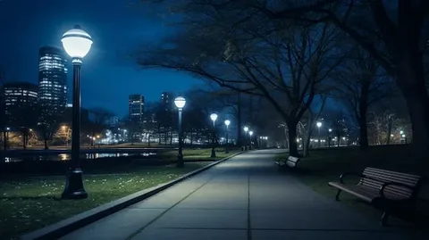

Лето 2021 года. В мой город — как и в сотню других — пришли яркие бесшумные самокаты с горящими фарами. Кикшеринг. Электрический самокат. Чудо последней мили.
Первая реакция — восторг. Скачать приложение — пшик. Отсканировать QR — готово. Город сжался: вместо 40 минут на автобусе — 12 на самокате. Ура, технологиям!
Восторг длился ровно три месяца.
К осени 2021 года «самокатчики» стали главным раздражителем городских пабликов. «Сбил ребёнка», «переехал ногу пенсионерке», «бросили посреди тротуара». А к 2025 году кикшеринг превратился в поле битвы. Война всех против всех: пешеходы против самокатов, самокаты против машин, кикшеринг против городских властей, и взрослые мужчины с электросамокатами против бабушек с авоськами.
Три года я наблюдала за этой эпидемией — и решила поговорить с каждой стороной. Вот их правда.
Хронология безумия: от «вау» до «убейте их»
Восторг длился ровно 90 дней. Нажми год — отфильтруй этапы.
Золотой век
Самокаты появляются на улицах. Люди выстраиваются в очередь, чтобы прокатиться. Город сжимается до 12 минут. Технологический оптимизм на пике.
😍 ВосторгПервые жертвы
В новостях появляются первые резонансные случаи: в Москве самокатчик сбивает женщину с коляской, в Петербурге подросток врезается в витрину. Начинаются обсуждения: «надо регистрировать», «надевать шлемы», «запретить ночью». Власти пожимают плечами — это бизнес, регулируйте сами.
😰 ТревогаЭскалация
Кикшеринговые компании — Whoosh, Яндекс, Urent — растут как грибы. Парк самокатов резко увеличивается. Люди учатся ездить вдвоём — запрещено, но весело. Появляется феномен «парковки где попало»: самокаты валяются на газонах, в прудах, на деревьях. Горожане объединяются в паблики «Самокатчики — исчадия ада».
🤬 ЯростьВойна правил
Власти вводят первые ограничения: зоны медленной езды (до 15 км/ч), парковочные короба, штрафы за брошенные самокаты. Кикшеринг отвечает технологиями: геозоны, штрафы за езду вдвоём, автовыключение в запрещённых зонах. Не помогает. Конфликт переходит в политическую плоскость: депутаты предлагают права на электросамокаты, номерные знаки.
⚖️ ПолитикаХолодная гражданская
Пешеходы вооружаются. Появляются «охотники на самокатов»: люди снимают брошенные самокаты с тротуаров, прячут в кусты или топят в реке. Видео, где парень кидает самокат Whoosh в Москву-реку, набирает миллион просмотров.
🧊 ЗастойТри голоса. Один тротуар. Три правды
Я встретилась с тремя людьми. У каждого — своя роль в этой драме.

Травматолог: «Каждый вечер — самокатные дети»
— Знаете, летом 2021 года я думал: «Ну вот, сейчас начнётся». И началось. Первые пациенты с «самокатными» переломами пришли в первую неделю. Сначала это были подростки, которые не рассчитали скорость. Потом — взрослые мужчины в состоянии легкого опьянения. Сейчас — все.
Чаще всего? Перелом лучевой кости — выставил руку при падении. Вывих плеча. И черепно-мозговые — когда без шлема и лицом в бордюр. Тяжёлые случаи: разрыв селезёнки, перелом основания черепа. Был парень, который влетел в припаркованную «Газель» — очнулся в реанимации через три дня.
Я не против самокатов. Я против идиотов. Но самокат превращает обычного идиота в опасного идиота. Потому что у пешехода скорость 5 км/ч, у велосипеда 15 км/ч, а у электрического самоката — 25–30 км/ч. При этом тормоза — как у велосипеда, а колёса — как у роликов.
Летом — «эпидемия самокатита», зимой затишье. Но каждый апрель мы готовим гипс.
— Что бы вы сказали самокатчикам?
— Не гоните. Шлем — не стыдно. И не садитесь вдвоём. Вдвоём на самокате — это гарантированный перелом обоим. Но они не слушают. Потому что молодость и чувство бессмертия. И дешёвый дофамин от скорости.

Курьер: «Я не злой, я просто опаздываю»
— Слушай, я понимаю, пешеходы меня ненавидят. Я и сам пешеход, когда без смены. Но вы поймите: у меня 7 заказов в час, лимит времени, и если я опоздаю — штраф. Тротуары узкие. Люди идут по три в ряд и не слышат звонок — в наушниках. Я кричу «Пропустите!», они оборачиваются и матерятся. Что мне делать? Слезть и идти пешком? Тогда я потеряю работу.
Да, мы сигналим. Да, мы проскакиваем на красный, если нет машин. Да, иногда задеваем зеркала. Но система заставляет нас быть такими. Вы думаете, мне нравится рисковать? Нет. Но алгоритм не знает жалости. В приложении счётчик тикает, и ты превращаешься в зверя.
Без самоката я бы не работал курьером. На машине — пробки, на велосипеде — устаю. Самокат — золотая середина. Но мы с пешеходами воюем за одни и те же пять сантиметров асфальта.
Алгоритм не знает жалости. Счётчик тикает — и ты превращаешься в зверя.
— Что бы ты изменил?
— Шире тротуары. Отдельные дорожки для микромобильности. И чтобы люди смотрели по сторонам, а не в телефон. И да — чтобы заказчики ждали на 5 минут дольше. Но они не будут.

Пенсионерка на лавочке: «Меня сбили — и уехали»
— Я их называю «шуршалками». Шуршат шинами и не слышно. Идут на тебя сзади — и ты не знаешь. В прошлом году я выходила из аптеки, шаг сделала, и вдруг — бац! Меня сбили. Мальчик молодой, в кепке, на чёрном самокате. Упала я, сумка разлетелась, колено разбито. А он что? Вскочил, оглянулся и уехал. Даже не спросил, жива ли.
Я теперь боюсь выходить. Особенно вечером, когда они с работы едут — злые, быстрые. Мы, старики, медленные. Нам надо посмотреть, подумать. А они как снаряды. И ладно бы только дети. Взрослые мужчины — с портфелями, в костюмах — тоже гоняют. Стыдно должно быть.
Раньше был порядок: кто пешком — тот прав. Теперь кто громче сигналит, тот и главный. Я за то, чтобы их запретить. Вообще. Или чтобы номера повесили и ловили. А то как в лесу: кто быстрее, тот и царь.
Раньше кто пешком — тот прав. Теперь кто громче сигналит, тот и главный.
— Если бы вам дали слово на городском собрании?
— Сделайте для них свои дороги! Отделите от людей. А если нет места — пусть не ездят. Моя жизнь не дешевле их доставок.
Карта конфликтов: где и почему мы ненавидим друг друга
Пять типовых точек взрыва. Нажми на метку — прочитай, что там происходит.

Узкий тротуар у остановки
Пешеходы выходят из автобуса. Самокатчик проносится в 10 см. Крики, мат, риск сбить ребёнка. Очаг напряжённости: высокая плотность людей + низкая предсказуемость движения.
🔴 Опасность: высокаяКак пытались навести порядок (и почему не выходит)
Город и кикшеринговые компании пробовали всё.
Штрафы за парковку
В приложении — фотоотчёт. Если самокат брошен неправильно, с карты списывают 500–1000 руб. Результат? Люди стали бросать аккуратнее… но только на видных местах. В кустах по-прежнему валяются.
Зоны медленной езды
Навигатор сам снижает скорость до 10–15 км/ч в парках и на пешеходных улицах. Хитрость: «умные» пользователи выносят самокат за пределы зоны на руках, разгоняются и заезжают обратно.
Шлемы и права
В ряде регионов пытались ввести обязательные права категории «М» или шлемы. Лобби кикшеринга отбило — это убивает бизнес. Компромисс: рекомендации, но не обязанность.
Ночной запрет
Некоторые города запрещают аренду с 23:00 до 06:00. Да, пьяные поездки сократились. Но ночью самокаты просто стоят на парковках, а утром их разбирают за минуту.
Идентификация пользователя
По паспорту, с фото. Стало меньше подростков? Нет. Дети катаются на самокатах родителей или крадут аккаунты.
Народный самосуд
«Охотники» кидают самокаты в реку. В ответ компании нанимают службы мониторинга и подают в суд на вандалов. В прошлом году парня из одного из регионов приговорили к 400 часам работ за утопленный Whoosh.
Главная проблема: никто не хочет уступать. Пешеходы требуют запретить. Самокатчики требуют свободы. Городские власти не могут построить выделенные дорожки — нет денег, нет места, нет политической воли. Кикшеринговые компании говорят «мы за безопасность», но их бизнес — это количество поездок.

Это не про самокаты. Это про скорость против комфорта
Я ездила на самокате — и понимаю тот кайф, когда город вдруг становится твоим. Но я и шла пешком, когда меня обгоняли в двух сантиметрах, и вздрагивала.
Самокат — не причина, а симптом. Он высветил городскую болезнь: мы разучились договариваться. Раньше на тротуаре было два темпа — медленный и быстрый. Быстрых было мало, их можно было обойти.
Теперь появился третий — массовый, дешёвый, непредсказуемый. А инфраструктуры и этики для него нет. Обгонять слева? Сигналить? Слезать? Никто не знает.
Запретить — просто. Ограничить скорость до 10 км/ч — тоже. Но тогда исчезнет смысл. Построить сеть дорожек и договориться, что на узких тротуарах — только пешком — можно. Но это требует денег, времени и воли.
Пока каждый выбирает сам: быть частью эпидемии или частью решения. Либо мы научимся делить пространство — либо война на тротуарах затянется. И ни гипс, ни штраф, ни самокат на дне реки тут не помогут.